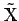
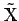

Ein vollständiger normierter Raum heißt BANACH-Raum. Jeder normierte Raum  kann zu einem BANACH-Raum  auf der Grundlage der Prozedur der Vervollständigung und der natürlichen Fortsetzung seiner algebraischen Operationen und der Norm auf vervollständigt werden.
kann zu einem BANACH-Raum  auf der Grundlage der Prozedur der Vervollständigung und der natürlichen Fortsetzung seiner algebraischen Operationen und der Norm auf vervollständigt werden.